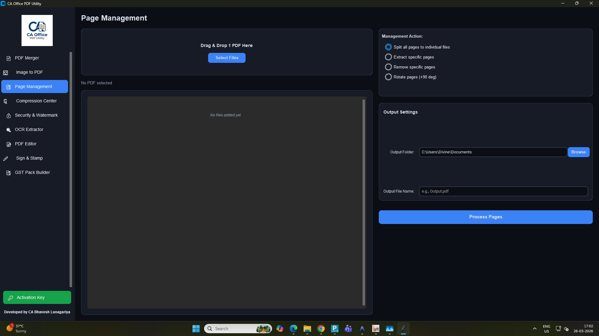
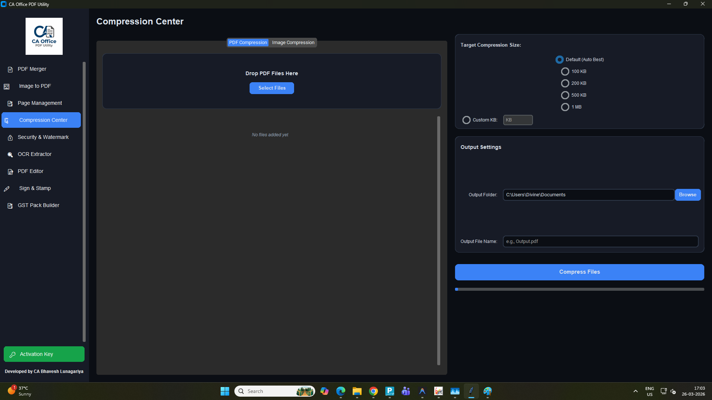
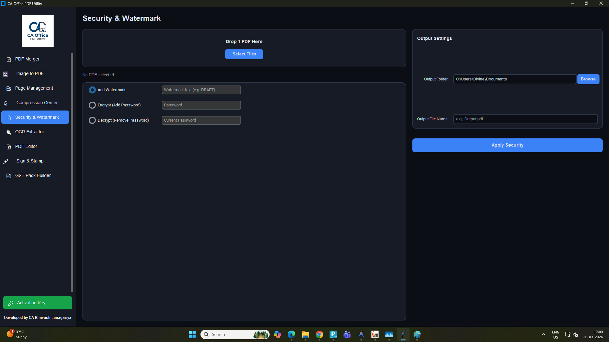

Smart PDF Utility for CA Office Daily Work
CA Office PDF Utility is a desktop software for Chartered Accountants, tax professionals and office users to manage PDF work easily.
Current Version: V1.0
Download NowThis software helps support DPDP-friendly workflow because data is processed locally on the user's computer and is not shared externally during normal use.



Email: marutitechsolutions@gmail.com
WhatsApp: 8200808507